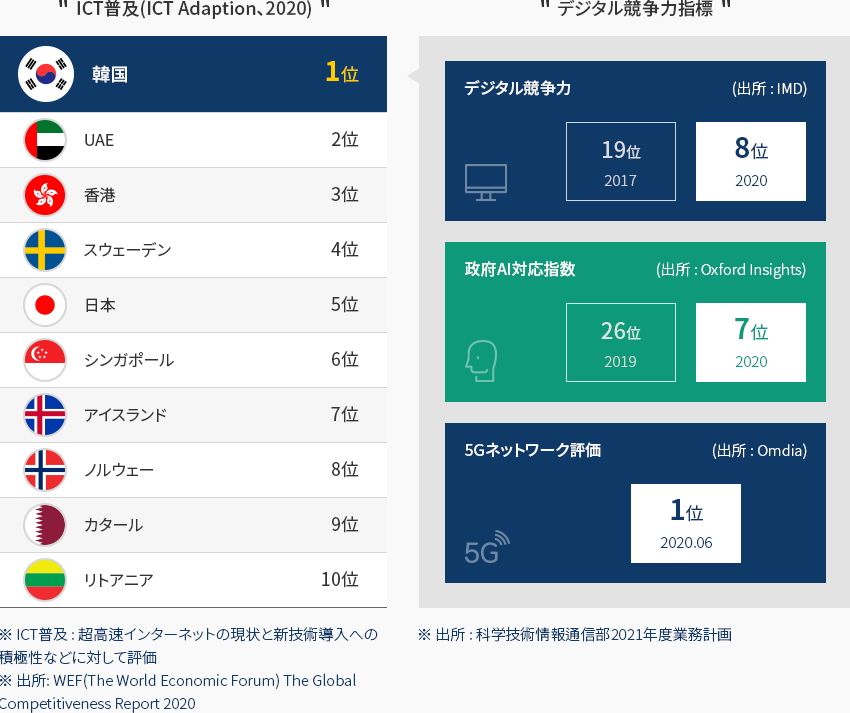
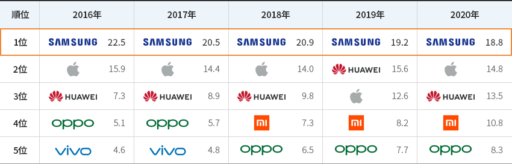
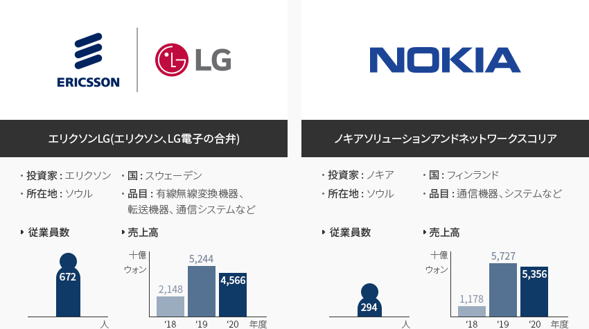
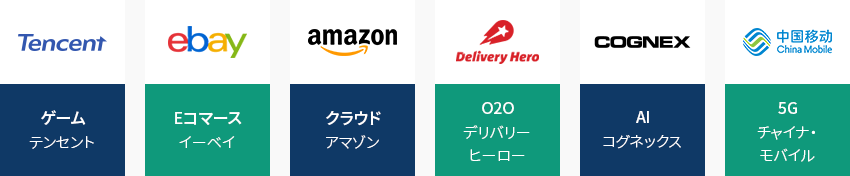
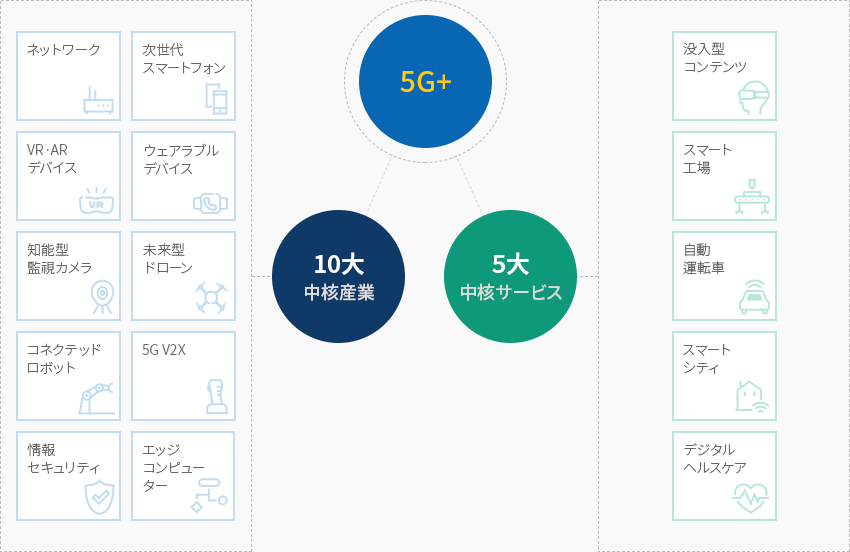
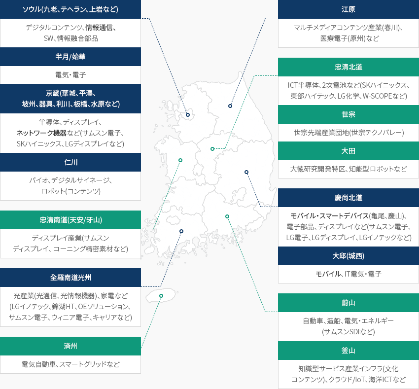

情報通信(ICT)
- Home
- Why KOREA
- 産業
- 情報通信(ICT)
情報通信(ICT)
Information & Communications Technology
-
世界初、そして 世界最高のIT大国 コンテンツを閉じる世界初、そして 世界最高のIT大国韓国はICT産業のグローバルリーダーである。
韓国は世界で初めてCDMA(1996年)、LTE-A(2013年)、5G(2019年)を商用化しており、
高度なICT技術水準と普及率によってICT部門のグローバルリーダーと評価されている。"ICT普及(ICT Adaption、2020)"
- 1位:韓国
- 2位:UAE
- 3位:香港
- 4位:スウェーデン
- 5位:日本
- 6位:シンガポール
- 7位:アイスランド
- 8位:ノルウェー
- 9位:カタール
- 10位:リトアニア
※ ICT普及 : 超高速インターネットの現状と新技術導入への積極性などに対して評価
※ 出所: WEF(The World Economic Forum) The Global 2019
Competitiveness Report 2020"デジタル競争力指標"
- デジタル競争力 2017 - 19位 2020 -8位
- 政府AI準備指数(出所 : Oxford Insights) 2017 - 26位 2020 - 7位
- 5Gネットワーク評価(出所 : Omdia) 2020.06 - 1位
※ 出所:科学技術情報通信部2021年度業務計画 特に、スマートフォン及びネットワーク機器メーカーがグローバル市場で頭角を現しており、韓国の移動通信サービスも
特に、スマートフォン及びネットワーク機器メーカーがグローバル市場で頭角を現しており、韓国の移動通信サービスも
世界的な革新をリードしている。 韓国のスマートフォンメーカーは5Gとフォルダブルフォンの大衆化を進めつつプレミアムリーダーシップを
強化すると同時に格安スマートフォンのラインナップを拡充して2011年以来、世界スマートフォン市場で販売トップを維持している。※ サムスン電子のフォルダブルスマートフォンのシェア(Counterpoint、%(万台)) : (‘20)73(204) → (‘21e)88(792) → (’23e)75(2,100)「世界スマートフォン市場における上位5社の市場シェアの推移」(単位 : %)世界スマートフォン市場における上位5社の市場シェアの推移 順位, 2015年, 2016年, 2017年, 2018年, 2019年 順位 2016 2017 2018 2019 2020 1 SAMSUNG 22.5% SAMSUNG 20.5% SAMSUNG 20.9% SAMSUNG 19.2% SAMSUNG 18.8% 2 Apple 15.9% Apple 14.4% Apple 14.0% HUAWEI 15.6% Apple 14.8% 3 HUAWEI 7.3% HUAWEI 8.9% HUAWEI 9.8% Apple 12.6% HUAWEI 13.5% 4 OPPO 5.1% OPPO 5.7% Xiaomi 7.3% Xiaomi 8.2% Xiaomi 10.8% 5 vivo 4.6% vivo 4.8% OPPO 6.5% OPPO 7.7% OPPO 8.3%  ※ 出所 : Gartner (販売量基準)
※ 出所 : Gartner (販売量基準) -
国の経済を主導する 主力産業 コンテンツを開く国の経済を主導する 主力産業2020年基準で、GDPにおけるICT産業の割合は11.4%(1,775億ドル)で韓国経済の成長をけん引している。
特に、携帯電話は、韓国の15大輸出品目の一つで、2020年の韓国輸出全体の約2.2%を占めており、
5Gの商用化で通信サービス産業の売上は増加傾向を維持している。※ 携帯電話の輸出実績(億ドル) : (‘17年)190 → (’18年)146 → (‘19年)120 → (’20年)112
※ 通信サービスの売上実績(兆ウォン) : (‘17年)38.0 → (’18年)37.3 → (‘19年)36.5 → (’20年)37.1(単位 : 十億ウォン)ICT産業生産(売上)高 順位, 年 順位 2016年 2017年 2018年 2019年 2020年 ICT 全体 4,310,446 4,716,630 5,017,265 4,628,612 4,793,643 機器 3,090,158 3,427,552 3,679,382 3,227,288 3,320,840 サービス 726,886 748,828 766,745 781,574 808,327 SW 493,402 540,251 571,139 619,750 664,477 ※ 出所 : 科学技術情報通信部、ICT主要品目動向調査
※ 国家統計ポータル(KOSIS) [移動] -
韓国に進出したグローバル企業の 5Gビジネスの強化 コンテンツを開く韓国に進出したグローバル企業の 5Gビジネスの強化韓国に進出したグローバルICT企業は、最近5G関連事業を拡大している。韓国と投資を通じて2Gから通信市場を主導してきたスウェーデン企業のエリクソンが韓国の移動通信会社と共同で
5GへのR&D投資を強化している。 フィンランド企業のノキアは韓国でのさまざまな経験を基に、海外ネットワークの
品質・性能改善を支援しており、5Gなどの次世代ネットワークインフラの仮想化及びソリューションを提供している。(‘20.12月基準)エリクソンLG- 投資家 : エリクソン
- 国 : スウェーデン
- 所在地 : ソウル
- 品目 : 有線無線変換機器、転送機器、 通信システムなど
- 従業員数 : 668 (‘19.12月基準)
- 売上高
- ’17年 : 2.4十億ウォン
- ’18年 : 2.0十億ウォン
- ‘19年 : 4.5十億ウォン
ノキアソリューションアンドネットワークスコリア- 投資家 : ノキア
- 国 : フィンランド
- 所在地 : ソウル
- 品目 : 通信機器、システムなど
- 従業員数 : 274(‘19.12月基準)
- 売上高
- ’17年 : 1.7十億ウォン
- ’18年 : 1.1十億ウォン
- ’19年 : 4.9十億ウォン
 また、様々なグローバル企業の5G、AI、クラウド、eコマース、O2O、ゲーム、映像関連投資が行われており、
また、様々なグローバル企業の5G、AI、クラウド、eコマース、O2O、ゲーム、映像関連投資が行われており、
今後のデジタル大転換時代に合わせて電子商取引、オンラインプラットフォームなどへの投資は持続的に増加するものとみられる。※ デジタルニューディール分野の外国人直接投資(産業通商資源部投資誘致課、億ドル) : (‘20.上)14.5 → (’21.上)33.3(+129.3%)
※ 情報通信分野の外国人直接投資(産業通商資源部投資誘致課、億ドル) : (‘20.上)10.2 → (’21.上)1.7(+210.8%)
-
5G+戦略と デジタルニューディール コンテンツを開く5G+戦略と デジタルニューディール2019年4月、韓国政府は5G早期商用化及び5G基盤の新産業育成のために「5Gプラス(5G+)」戦略を公表した
5G基盤の10大中核産業と5大中核サービスに重点的に投資することで5G+基盤の新産業を育成し、
2026年まで世界市場の15%を占めることを目標に、政府及び公共分野に
積極的に5Gを導入して民官協力体系を構築する。「5G+戦略の10大中核産業及び5大中核サービス」5G- 10大 中核産業
- ネットワーク
- 次世代 スマートフォン
- VRㆍAR デバイス
- ウェアラブル デバイス
- 知能型 監視カメラ
- 未来型 ドローン
- コネクテッド ロボット
- 5G V2X
- 情報セキュリティ
- エッジ コンピューター
- 5大 中核サービス
- 没入型 コンテンツ
- スマート 工場
- 自動 運転車
- スマート シティ
- デジタル ヘルスケア
※ 資料 : 科学技術情報通信部 革新成長の実現に向けた5G+戦略2020年7月、韓国政府は「韓国版ニューディール政策」を発表し、追ってD.N.A(Data、Network、AI)生態系に集中投資する計画を明らかにした。
5G全国ネットワーク構築の支援、AI融合プロジェクトの推進などを通じて全産業のデータ、5G、AIの利用及び融合を加速化することがその目標であった。
1年間、非対面取引・教育の拡大などの分野での迅速なデジタルへの転換でコロナ禍の克服に貢献し、堅調な回復を実現した。2021年7月には急激に変化した環境に合わせて積極的に対応するために、従来のニューディール戦略を発展・補完した「ニューディール2.0戦略」を策定した。
デジタル融合複合及びニューディール1.0の成果を経済社会全般に拡大し、メタバース、クラウド、ブロックチェーンなどの超連結新産業の育成を目指している。※ ‘22年デジタルニューディールの財政投資 : (ニューディール1.0) 8.6兆ウォン → (ニューディール2.0) 8.7兆ウォン以上
※ ‘25年デジタルニューディールの累積財政投資 : (ニューディール1.0) 44.8兆ウォン → (ニューディール2.0) 49兆ウォン水準「デジタルニューディール1.0とニューディール2.0」デジタルニューディール1.0とニューディール2.0 ニューディール1.0(現在)「経済基盤デジタル転換の推進」, 「デジタル融合複合の拡大」 デジタルニューディール ニューディール1.0(現在)「経済基盤デジタル転換の推進」 D.N.A 生態系強化 - データ·5G·AI融合及び利用促進企業·産業デジタル化の推進
教育インフラのデジタル転換 - スマート学校、オン・オフライン融合学習など
非対面産業の育成 - 医療·介護インフラのデジタル非対面化、小規模事業者のオンラインビジネス支援など
SOCデジタル化 - 交通・災害管理などのデジタル化、スマート産業団地・シティの物流システム構築
ニューディール2.0(変更)「デジタル融合複合の拡大」 D.N.A 生態系強化 - マイデータ産業の拡大(個人情報法改正)及び仮名情報利用の支援
- デジタル経済転換3法の制定
- 6G国際共同研究開発協力体系の構築
非対面インフラの高度化(統合) - 小・中・高校の高性能WiFiの早期構築
- ドクターアンサークリニックの運営、知能型緊急医療サービス普及の推進
- スマート技術(IoT、AIなど)を利用したスマートストアの質的高度化
メタバースなど超連結新産業の育成 - 開放型メタバースプラットフォームの構築及び多様なメタバースコンテンツの制作支援
- 社会的な問題を解決するための5G·AI基盤ロボット·サービス融合の実証
- 複数部処の大規模ブロックチェーン技術の融合・連携プロジェクトの推進
- 知能型IoTサービスの発掘及び適用拡大
SOCデジタル化 - スマートシティ・データハブの拡大構築
※ 資料: 韓国版ニューディール2.0 - 10大 中核産業
-
首都圏、大邱・慶北圏 通信機器製造業の発達 コンテンツを開く首都圏、大邱・慶北圏 通信機器製造業の発達韓国には地域別にICT産業と関連したクラスターが分布しており、分野別にみるとスマートフォンは首都圏、大邱・慶北圏を中心に、
ネットワーク機器は首都圏を中心に形成されている。5Gネットワークインフラについては首都圏中心から全国に拡大する計画を進めている。- ソウル(九老、テヘラン、上岩など) : デジタルコンテンツ、情報通信、SW、情報融合部品
- 半月/始華: 電気・電子
- 京畿(華城、平澤、坡州、器興、利川、板橋、水原など): 半導体、ディスプレイ、ネットワーク機器など(サムスン電子、SKハイニックス、LGディスプレイなど)
- 仁川: バイオ、デジタルサイネージ、ロボット(コンテンツ)
- 忠清南道(天安/牙山): ディスプレイ産業(サムスンディスプレイ、 コーニング精密素材など)
- 全羅南道光州: 光産業(光通信、光情報機器)、家電など(LGイノテック、錦湖HT、OEソリューション、サムスン電子、ウィニア電子、キャリアなど)
- 済州: 電気自動車、スマートグリッドなど
- 江原:マルチメディアコンテンツ産業(春川)、 医療電子(原州)など
- 忠清北道: ICT半導体、2次電池など(SKハイニックス、東部ハイテック、LG化学、W-SCOPEなど)
- 世宗: 世宗先端産業団地(世宗テクノバレー)
- 大田: 大徳研究開発特区、知能型ロボットなど
- 慶尚北道: モバイル・スマートデバイス(亀尾、慶山)、電子部品、ディスプレイなど(サムスン電子、LG電子、LGディスプレイ、LGイノテックなど)
- 大邱(城西): モバイル、IT電気・電子
- 蔚山: 自動車、造船、電気・エネルギー(サムスンSDIなど)
- 釜山: 知識型サービス産業インフラ(文化コンテンツ)、クラウド/IоT、海洋ICTなど
※ 資料 : 韓国電子情報通信産業振興会


Invest KOREA
ICT PM
ガン・ヒョンゴン、パク・ミリ
新産業誘致チーム
T.+82-2-3460-7865, 7861
おすすめの立地情報
Industrial complex information
[Gyeonggi-do Anyang City] Anyang Pyeongchon Smart Square Urban High-tech
Industrial Complex
Click [Go to Detailed Information] to go to the relevant information screen of
Smart K-Factory service of Industrial Complex Corporation.
-
Complex nameAnyang Pyeongchon Smart Square Urban High-tech Industrial Complex
-
Initial designation date2012.04.03
-
Designated area(m2)255,065
-
ManagementGyeonggi-do Anyang City
-
Nearby RailwayGwangmyeong Station
-
Distance from station(km)9
-
Nearby AirportGimpo International Airport
-
Distance from airport(km)27
-
Industrial water Supply capacity(ton/day)1251(㎥/day)
-
Affiliation local governmentGyeonggi-do Anyang City
-
Population554,857
Industrial complex information
[Busan Metropolitan City Haeundae-gu] Hoe-dong and Seokdae Urban High-tech
Industrial Park
Click [Go to Detailed Information] to go to the relevant information screen of
Smart K-Factory service of Industrial Complex Corporation.
-
Complex nameHoe-dong and Seokdae Urban High-tech Industrial Park
-
Initial designation date2008.08.27
-
Designated area(m2)228,604
-
ManagementBusan Metropolitan City Haeundae-gu
-
Nearby RailwayBujeon Station
-
Distance from station(km)12
-
Nearby AirportGimhae International Airport
-
Distance from airport(km)33
-
Industrial water Supply capacity(ton/day)2939(㎥/day)
-
Affiliation local governmentBusan Metropolitan City Haeundae-gu
-
Population403,118
Industrial complex information
[Daejeon Metropolitan City Useong-gu] Daedeok R&D (2nd District) [formerly:
Daedeok Techno Valley]
Click [Go to Detailed Information] to go to the relevant information screen of
Smart K-Factory service of Industrial Complex Corporation.
-
Complex nameDaedeok R&D (2nd District) [formerly: Daedeok Techno Valley]
-
Initial designation date1991.12.05
-
Designated area(m2)4,270,056
-
ManagementInnopolis Foundation
-
Nearby RailwayDaejeon Station
-
Distance from station(km)13
-
Nearby AirportCheongju International Airport
-
Distance from airport(km)44
-
Industrial water Supply capacity(ton/day)130000(㎥/day)
-
Affiliation local governmentDaejeon Metropolitan City Useong-gu
-
Population1,469,431
Industrial complex information
[Jeollabuk-do Jeongeup City] Jeongeup High-tech Science (RFT) General
Industrial Complex
Click [Go to Detailed Information] to go to the relevant information screen of
Smart K-Factory service of Industrial Complex Corporation.
-
Complex nameJeongeup High-tech Science (RFT) General Industrial Complex
-
Initial designation date2007.06.29
-
Designated area(m2)896,321
-
ManagementInnopolis Foundation
-
Nearby RailwayCheonwon Station
-
Distance from station(km)6
-
Nearby AirportGwangju Airport
-
Distance from airport(km)51
-
Industrial water Supply capacity(ton/day)4,720(㎥/day)
-
Affiliation local governmentJeollabuk-do Jeongeup City
-
Population109,167
Industrial complex information
[Daegu Metropolitan City Dalseong County] Daegu Technopolis General
Industrial Complex(Daegu Gyeongbuk Free Economic Zone)
Click [Go to Detailed Information] to go to the relevant information screen of
Smart K-Factory service of Industrial Complex Corporation.
-
Complex nameDaegu Technopolis General Industrial Complex(Daegu Gyeongbuk Free Economic Zone)
-
Initial designation date2006.12.29
-
Designated area(m2)7,259,403
-
ManagementInnopolis Foundation
-
Nearby RailwayDongdaegu Station
-
Distance from station(km)4
-
Nearby AirportDaegu International Airport
-
Distance from airport(km)5
-
Industrial water Supply capacity(ton/day)8508(㎥/day)
-
Affiliation local governmentDaegu Metropolitan City Dalseong County
-
Population258,234
Industrial complex information
[Jeju Special Self-Governing Province Jeju-si] Jeju Advanced Science and
Technology Complex
Click [Go to Detailed Information] to go to the relevant information screen of
Smart K-Factory service of Industrial Complex Corporation.
-
Complex nameJeju Advanced Science and Technology Complex
-
Initial designation date2004.10.23
-
Designated area(m2)1,098,878
-
ManagementJeju International Free City Development Center
-
Nearby Railway-
-
Distance from station(km)-
-
Nearby AirportJeju Airport
-
Distance from airport(km)14
-
Industrial water Supply capacity(ton/day)1025(㎥/day)
-
Affiliation local governmentJeju Special Self-Governing Province Jeju-si
-
Population672,524